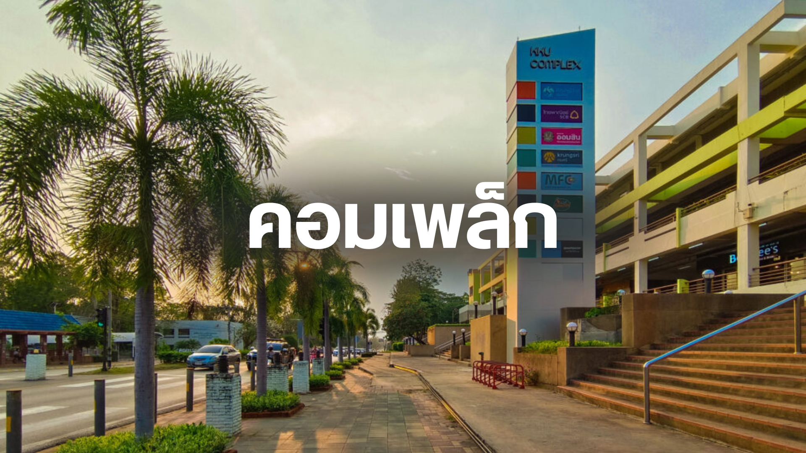
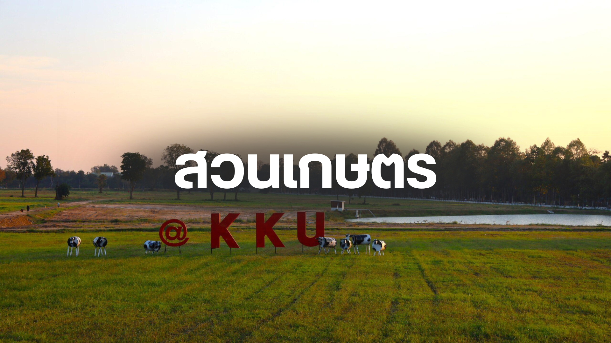
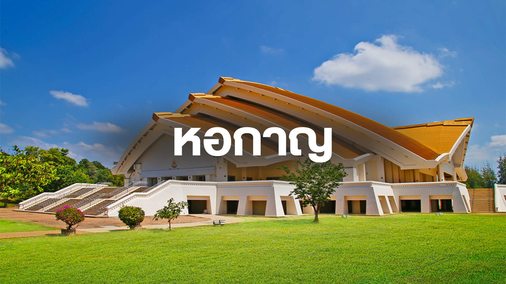
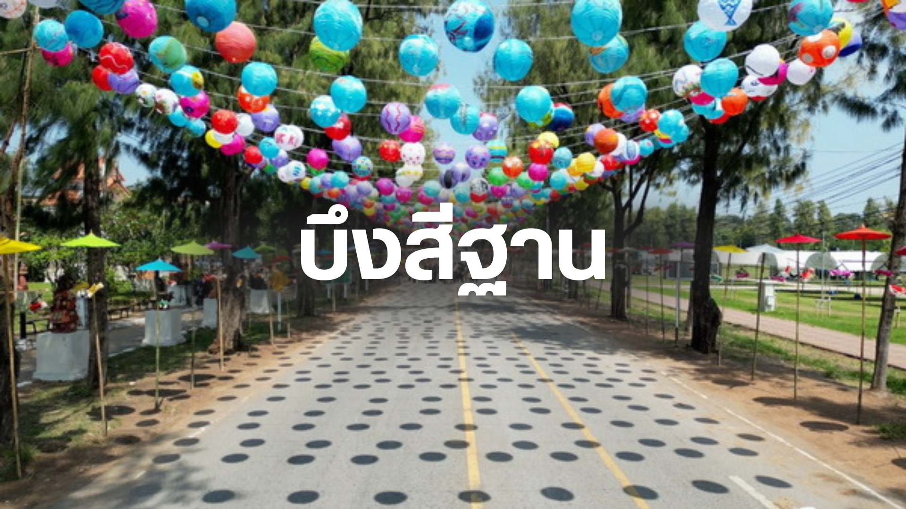

⭐ แนะนำสถานที่เด่นภายในมหาวิทยาลัยขอนแก่น (Khon Kaen University – KKU)
มหาวิทยาลัยขอนแก่นเป็นสถาบันการศึกษาชั้นนำของภาคตะวันออกเฉียงเหนือที่ขึ้นชื่อด้านคุณภาพการเรียน การวิจัย และบรรยากาศแห่งการพัฒนาอย่างยั่งยืน ตัวมหาวิทยาลัยตั้งอยู่บนพื้นที่กว้างใหญ่ท่ามกลางธรรมชาติที่ร่มรื่น ทำให้ทั้งนักศึกษา บุคลากร และผู้มาเยือนสัมผัสได้ถึงความอบอุ่นและเป็นมิตรตั้งแต่ก้าวแรกที่เข้ามา
🏢 คอมเพล็กซ์ (Complex) — ศูนย์รวมไลฟ์สไตล์ของนักศึกษา
คอมเพล็กซ์ถือเป็นพื้นที่ที่มีชีวิตชีวาที่สุดแห่งหนึ่งในมหาวิทยาลัยขอนแก่น เพราะเป็นแหล่งรวมทุกอย่างที่นักศึกษาต้องใช้ในชีวิตประจำวัน ไม่ว่าจะเป็นการกิน เที่ยว ทำงาน หรือพักผ่อน ทำให้ที่นี่กลายเป็นจุดนัดพบยอดนิยมที่ทุกคนต้องแวะมาอย่างน้อยวันละครั้ง
- ภายในคอมเพล็กซ์ประกอบด้วย
- ร้านอาหารหลากหลายสไตล์ ทั้งอาหารตามสั่ง ร้านข้าวแกง เครื่องดื่ม คาเฟ่ และร้านขนม เหมาะสำหรับมื้อด่วนระหว่างคาบเรียน
- ร้านกาแฟและคาเฟ่นั่งทำงาน มีมุมให้นั่งอ่านหนังสือหรือทำงานกลุ่ม พร้อมบรรยากาศสบายๆ
- ร้านสะดวกซื้อและร้านบริการต่าง ๆ เช่น ร้านเครื่องเขียน ร้านขายอุปกรณ์การเรียน ร้านถ่ายเอกสาร ตอบโจทย์ชีวิตประจำวันของนักศึกษา
- ธนาคารและตู้ ATM ครบทุกบริการ ช่วยอำนวยความสะดวกด้านการเงิน
- ลานกิจกรรมกลางแจ้ง ที่มักใช้จัดกิจกรรมชมรม มินิคอนเสิร์ต บูธขายของ และกิจกรรมของสโมสรนักศึกษา
คอมเพล็กซ์จึงไม่ได้เป็นแค่ “สถานที่สำหรับซื้อของหรือกินข้าว” แต่ยังเป็นพื้นที่ที่สะท้อนการใช้ชีวิตของนักศึกษามข.อย่างแท้จริง ทั้งอบอุ่น มีชีวิตชีวา และเต็มไปด้วยความทรงจำในแต่ละวันของการเรียนมหาวิทยาลัย
🌳 สวนสาธารณะเกษตร — พื้นที่สีเขียวเพื่อการพักผ่อน
มหาวิทยาลัยขอนแก่นให้ความสำคัญกับการสร้างสภาพแวดล้อมที่เอื้อต่อการเรียนรู้และการพักผ่อน โดยมีสวนสาธารณะและพื้นที่สีเขียวกระจายอยู่ทั่วบริเวณมหาวิทยาลัย ทำให้นักศึกษาและบุคลากรมีโอกาสได้สัมผัสกับธรรมชาติท่ามกลางบรรยากาศที่เงียบสงบ
- สวนสาธารณะภายในมหาวิทยาลัยมีคุณสมบัติเด่นดังนี้
- พื้นที่สำหรับออกกำลังกาย เช่น ลู่วิ่ง สนามบาสเกตบอล และสนามฟุตบอล ที่เปิดโอกาสให้นักศึกษาได้ดูแลสุขภาพและผ่อนคลายหลังเลิกเรียน
- มุมอ่านหนังสือกลางแจ้ง ที่มีโต๊ะและม้านั่งร่มรื่น เหมาะสำหรับการนั่งอ่านหนังสือหรือทำงานกลุ่มในบรรยากาศธรรมชาติ
- เส้นทางเดินเล่นและปั่นจักรยาน ที่เชื่อมต่อระหว่างอาคารต่าง ๆ ช่วยส่งเสริมการเคลื่อนไหวและสุขภาพที่ดี
- พื้นที่จัดกิจกรรมกลางแจ้ง สำหรับการจัดกิจกรรมชมรม การประชุม หรือแม้แต่การจัดงานเลี้ยงสังสรรค์ในบรรยากาศธรรมชาติ
สวนสาธารณะภายในมหาวิทยาลัยขอนแก่นจึงเป็นมากกว่าพื้นที่สีเขียว แต่เป็นแหล่งพักผ่อนใจที่ช่วยเติมพลังให้กับนักศึกษาและบุคลากรทุกคนในทุกๆ วัน
🏞 หอประชุมกาญจนาภิเษก (หอกาญ) และบึงสีฐาน — แลนด์มาร์คของ KKU
หอกาญเป็นอาคารหอประชุมใหญ่ประจำมหาวิทยาลัย ใช้จัดพิธีการสำคัญ งานประชุม และกิจกรรมขนาดใหญ่ อยู่ใกล้กับ บึงสีฐาน แหล่งพักผ่อนยอดฮิตที่มีทางเดิน-ทางวิ่งรอบบึง บรรยากาศสวยเหมาะกับการออกกำลังกายและถ่ายรูป หอกาญเป็นหนึ่งในอาคารที่มีความสำคัญที่สุดของมหาวิทยาลัยขอนแก่น ด้วยสถาปัตยกรรมโดดเด่นและพื้นที่ขนาดใหญ่ ทำให้ที่นี่ถูกใช้เป็นสถานที่จัดกิจกรรมสำคัญระดับมหาวิทยาลัยอยู่เสมอ เช่น
- พิธีพระราชทานปริญญาบัตร
- งานประชุมวิชาการระดับชาติ
- การแสดง การบรรยาย และกิจกรรมขององค์การนักศึกษา บรรยากาศบริเวณรอบอาคารโปร่งโล่ง รายล้อมด้วยต้นไม้และพื้นที่โล่งกว้าง ทำให้บริเวณนี้กลายเป็นมุมถ่ายภาพยอดนิยม โดยเฉพาะช่วงรับปริญญาที่เต็มไปด้วยครอบครัวและเพื่อน ๆ มาร่วมแสดงความยินดี
🌅 บึงสีฐาน — สวนธรรมชาติใจกลางมหาวิทยาลัย
บึงสีฐานเป็นหนึ่งในสถานที่ที่มีเสน่ห์มากที่สุดภายในมหาวิทยาลัยขอนแก่น ด้วยพื้นที่กว้างใหญ่ของผืนน้ำและความร่มรื่นจากต้นไม้นานาชนิด ทำให้ที่นี่กลายเป็น “หัวใจธรรมชาติ” ของชาวมข. ไม่ว่าคุณจะเป็นนักศึกษา บุคลากร หรือผู้มาเยือน บึงสีฐานคือจุดที่พร้อมต้อนรับทุกคนด้วยบรรยากาศเงียบสงบและสดชื่นตลอดทั้งวัน บึงสีฐานตั้งอยู่ไม่ไกลจากหอกาญ ถือเป็นพื้นที่พักผ่อนที่ชาวมข.ทุกคนคุ้นเคย บรรยากาศรอบบึงร่มรื่นตลอดทั้งวัน โดยมีไฮไลต์สำคัญ เช่น
- ทเส้นทางเดิน–วิ่งรอบบึง ที่ได้รับความนิยมสำหรับการออกกำลังกายยามเช้าและยามเย็น
- ลมเย็นตลอดวัน จากผืนน้ำกว้าง ทำให้ที่นี่เหมาะกับการมานั่งเล่น พูดคุย หรืออ่านหนังสือแบบสบาย ๆ
- วิวพระอาทิตย์ตกสวยมาก เป็นอีกหนึ่งจุดชมวิวที่ให้บรรยากาศอบอุ่น โรแมนติก และเหมาะกับการถ่ายภาพ
- กิจกรรมกลางแจ้ง เช่น ปั่นจักรยาน พักผ่อนกับเพื่อน หรือจัดกิจกรรมชมรมเล็ก ๆ ต่าง ๆ
บึงสีฐานจึงเป็นพื้นที่ที่ผสมผสานทั้งความสวยงามของธรรมชาติและไลฟ์สไตล์ของนักศึกษาในชีวิตประจำวัน ไม่ว่าจะเป็นวันเรียนหรือวันผ่อนคลาย ที่นี่มักเป็นจุดแรกที่ทุกคนเลือกมาพักใจและเติมพลัง
📬 แบบฟอร์มแนะนำสถานที่ในมหาวิทยาลัย
กรอกข้อมูลด้านล่างเพื่อส่งสถานที่ที่คุณอยากแนะนำเข้ามา